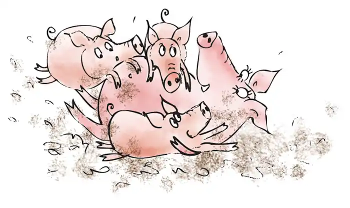

The story of The Three Little Pigs featured here has been adapted from different sources and from childhood memory. The primary sources are English Fairy Tales, retold by Flora Annie Steel (1922). This story is featured in our Fairy Tales and Children's Stories.
Once upon a time, there lived an old mother pig. She had three little pigs.
One day she decided to send them on their way to lead their lives on their own. “Go and seek your own destiny and fortune” the mother said, and the little pigs went their ways.